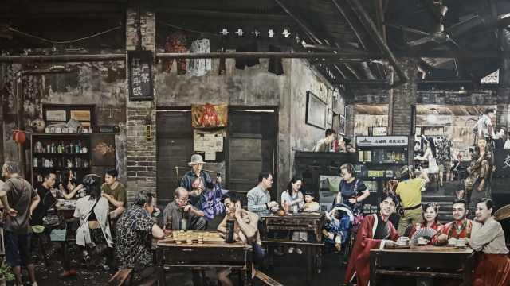
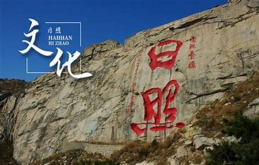

满满的回忆
日照之魅：传统与独特的文化底蕴

作为中国东部沿海城市，日照不仅以其绚丽的海岸线和富饶的渔业而闻名，更以其丰富多彩的传统风俗而独具魅力。这座城市蕴藏着独特的文化元素，历史悠久的风俗让人仿佛穿越时光，领略到传统和现代的交融。 让我们深入探索日照这个古老而现代的城市，发现它那宝贵的传统风俗，这些风俗如同一幅瑰丽的画卷，展现着这座城市的活力与魅力。
清晨，当第一缕阳光洒在这座城市，你会被日照独特的生活方式所折服。晨早的菜市场是这座城市的脉动之地。在这里，你不仅能感受到忙碌的交易氛围，还能体验到当地人特有的亲切与热情。 他们以独特的方式与食物相处，这一传统承载着对土地和丰收的敬畏，而这种敬畏传承了数百年。
日照，因其临海而充满着渔家文化的韵味。这里的人们世代以渔为业，这个古老的行当不仅赋予了日照独特的饮食文化，更蕴含着丰富的民间传说和故事。 渔家文化的传承不仅仅体现在他们对海洋的尊重，更反映在日照人对待家庭和社区的价值观中。 而今，这些传统已经演变成为现代生活的一部分，传统的捕鱼方式与现代科技相结合，展现出一种新型的渔业文化。
日照的传统节日是这座城市不可或缺的一部分。春节、端午节、中秋节等传统节日以独特的庆祝方式见证了这里浓厚的文化底蕴。 舞狮、舞龙、赛龙舟等民俗活动不仅给人们带来欢乐，更承载着丰富的文化内涵。这些节日象征着丰收和团圆，也凝聚着当地人的情感和期许。
日照的饮食文化源远流长，富有多样性。海鲜是这里的特色美食之一，新鲜的海产品在当地人的餐桌上常常扮演着主角。从海鲜大餐到地道的家常菜， 每一道菜肴都承载着丰富的历史和文化内涵。同时，不同的节日和传统活动也伴随着独特的美食传统，成为人们交流与庆祝的纽带。
日照拥有着丰富的文化遗产，从古老的建筑到口头传承的民间艺术，这些都是这座城市独特魅力的组成部分。通过各种活动和文化机构，日照当地政府和社会团体致力于文化遗产的保护和传承。 他们积极保护着古老的建筑，传统的手工艺和民间艺术，让这些文化瑰宝得以传承，延续着日照的文化脉络。
日照人以其热情好客而著称。在这里，人们之间的社交并非只是简单的交流，更是真诚的情感交融。 社区联系紧密，人们乐于在社交中分享彼此的喜悦和忧愁，这种亲情与友情的交融成就了日照人特有的人情味。
宗教信仰在日照的传统文化中扮演着重要角色。这里庙宇众多，宗教活动在人们日常生活中占据一席之地。无论是庙会还是信徒们的日常祭祀， 宗教活动都是日照文化中不可或缺的部分。人们的信仰给予他们力量和精神寄托，也在某种程度上影响着他们的行为和价值观。
日照是一个孕育着许多艺术家和文学家的城市。这里的艺术作品和文学作品多样而丰富，反映了人们对生活和文化的理解。 从传统绘画到现代文学作品，这些艺术作品都是日照文化的重要组成部分，传承着这座城市独有的精神和情感。
尽管现代化的影响日益加深，日照的文化传统却仍然深深地扎根于这片土地。人们在与现代生活方式的交融中不断调适，试图找到传统与现代的平衡点。 这种平衡并非冲突，而是一种相互促进和共生的状态，使得日照的文化传统在当今依然保持着活力和魅力。


有时间的话，就来日照吧，你值得来一趟，你得来一趟。